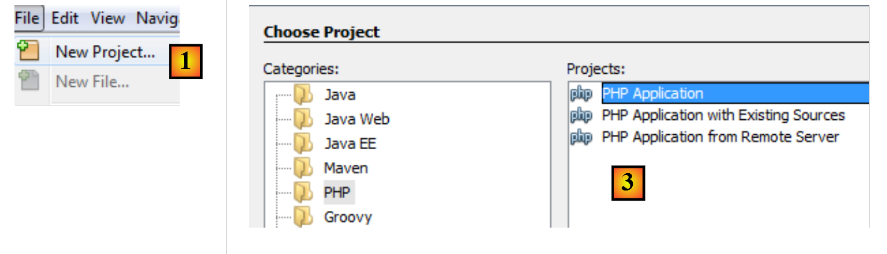
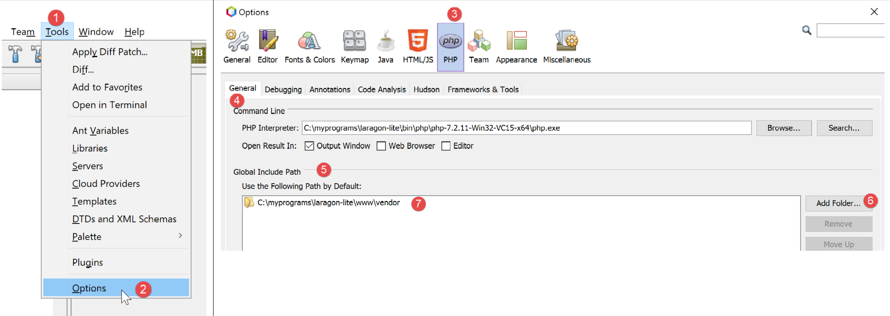
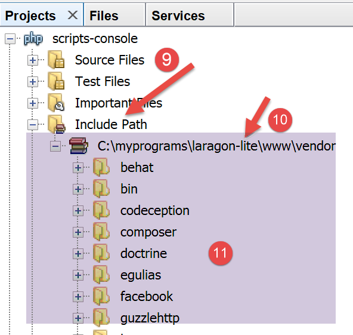
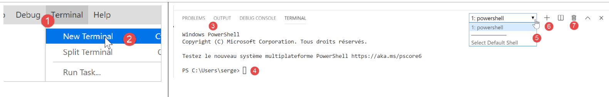
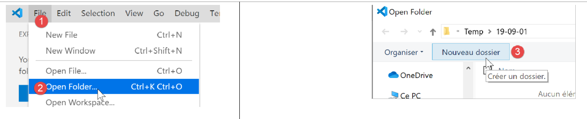
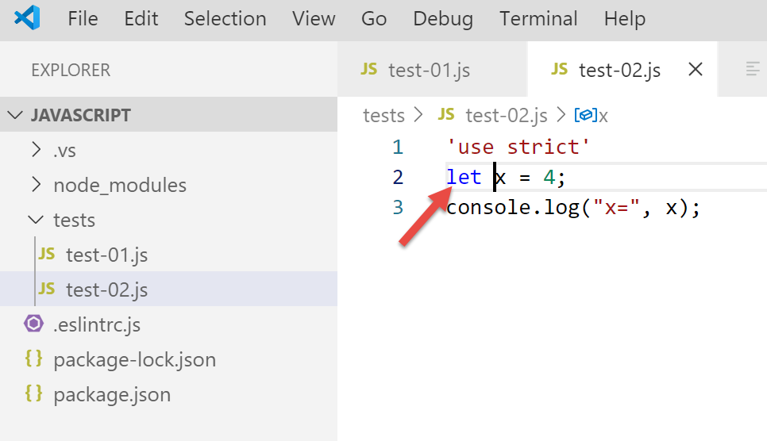
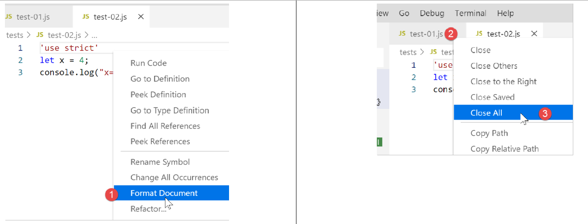

2. Setting up a development environment
We will use the following tools (on Windows 10 x64):
- [Laragon] to run the PHP web server;
- [NetBeans] to edit the PHP code;
- [Visual Studio Code] to write JavaScript code;
- [Node.js] to run it;
- [npm] to download and install the JavaScript libraries we will need;
2.1. Web server development environment
The PHP scripts were written and tested in the following environment:
- an Apache web server / MySQL DBMS / PHP 7.3 environment called Laragon;
- the NetBeans 10.0 development IDE;
2.1.1. Installing Laragon
Laragon is a package that combines several software components:
- an Apache web server. We will use it to write web scripts in PHP;
- the MySQL database management system;
- the PHP scripting language;
- a Redis server that provides caching for web applications:
Laragon can be downloaded (March 2019) at the following address:


- The installation [1-5] results in the following directory structure:

- [6] contains the PHP installation directory;
Launching [Laragon] displays the following window:

- [1]: the Laragon main menu;
- [2]: the [Start All] button launches the Apache web server and the MySQL database;
- [3]: The [WEB] button displays the web page [http://localhost], which corresponds to the PHP file [<laragon>/www/index.php], where <laragon> is the Laragon installation folder;
- [4]: the [Database] button allows you to manage the MySQL database using the [phpMyAdmin] tool. You must install this tool beforehand;
- [5]: The [Terminal] button opens a command terminal;
- [6]: The [Root] button opens a Windows Explorer window positioned on the [<laragon>/www] folder, which is the root directory of the [http://localhost] website. This is where you should place all web applications managed by Laragon’s Apache server;
Let’s open a Laragon terminal [5]:

- in [1], the terminal type. Three types of terminals are available in [6];
- in [2, 3]: the current folder;
- In [4], type the command [echo %PATH%], which displays the list of folders searched when looking for an executable. All of Laragon’s main folders are included in this executable path, which would not be the case if you opened a command prompt [cmd] in Windows. In this document, when you need to type commands to install a particular piece of software, these commands are generally typed in a Laragon terminal;
2.1.2. Installing the NetBeans 10.0 IDE
The NetBeans 10.0 IDE can be downloaded from the following address (March 2019):
https://netbeans.apache.org/download/index.HTML

The downloaded file is a ZIP file that simply needs to be unzipped. Once NetBeans is installed and launched, you can create your first PHP project.

- In [1], select the File / New Project option;
- In [2], select the [PHP] category;
- in [3], select the project type [PHP Application];

- In [4], give the project a name;
- In [5], choose a folder for the project;
- In [6], select the downloaded PHP version;
- in [7], select UTF-8 encoding for PHP files;
- In [8], select the [Script] mode to run PHP scripts in command-line mode. Select [Local WEB Server] to run a PHP script in a web environment;
- In [9,10], specify the installation directory for the Laragon package's PHP interpreter:

- select [Finish] to complete the PHP project creation wizard;

- In [11], the project is created using a script [index.php];
- In [12], we write a minimal PHP script;
- in [13], we run [index.php];

- in [14], the results in the NetBeans [output] window;
- in [15], create a new script;
- in [16], the new script;
The reader can create all the scripts that follow in different folders within the same PHP project. The source code for the scripts in this document is available in the following NetBeans directory structure:

The scripts in this document are located in the [scripts-console] project directory [1]. We will also use PHP libraries that will be placed in the [<laragon-lite>/www/vendor] folder [2], where <laragon-lite> is the installation directory for the Laragon software. In order for NetBeans to recognize the libraries in [2] as part of the [scripts-console] project, we need to include the [vendor] folder [2] in the project’s [Include Path] [3]. We will configure NetBeans so that the [<laragon-lite>/www/vendor] [2] folder is included in every new PHP project, not just the [scripts-console] project:

- In [1-2], go to the NetBeans options;
- in [3-4], configure the PHP options;
- in [5-7], configure PHP’s [Global Include Path]: the folders listed in [7] are automatically included in the [Include Path] of every PHP project;

- in [9], access the properties of the [Include Path] branch;
- in [10-11], the new libraries explored by NetBeans. NetBeans explores the PHP code in these libraries and stores their classes, interfaces, functions, etc., in order to provide assistance to the developer;

- in [12], a code snippet uses the [PhpMimeMailParser\Parser] class from the [vendor/php-mime-mail-parser] library;
- in [13], NetBeans suggests the methods of this class;
- In [14-15], NetBeans displays the documentation for the selected method;
The concept of [Include Path] is specific to NetBeans. PHP also has this concept, but they are, in principle, two different concepts.
Now that the development environment has been set up, we can cover the basics of PHP.
2.2. Development Environment for JavaScript
These tools can be installed using Laragon (see link section):

In [4], install [node.js]. Once the installation is complete, open a Laragon terminal (see link section) and check the version of [node.js] installed (1) as well as that of [npm] (2):

Next, we install Visual Studio Code, often referred to as [code] or [VSCode] [3-6]. Once that’s done, we can launch this development tool:


2.2.1. Configuring Visual Studio Code
We will now show how we configured [VSCode] so that the reader can understand the screenshots that will appear from time to time. The reader is free to configure [VSCode] as they see fit. They can even set up their preferred workspace. This is not important for what we will be doing next.
First, we’ll change the appearance of the [VSCode] window to have a light background instead of a black one:

Then we hide the left sidebar [1-2], whose items are also available in the menu. In [3-6], we set the code to format itself every time the file is saved and every time we copy and paste.

After saving the configuration [Ctrl-S], you can close the [Settings] window [7]. You can return to the [VSCode] configuration at any time [8-10]:

These settings are saved in a [settings.json] file that you can edit directly. Let’s open the [Settings] window as shown:

In [4], you can edit the [settings.json] file directly:

- in [1], the path to the [settings.json] file. One way to revert to the default settings is to delete this file;
- in [2], the settings we just configured;
Now, let’s open a terminal within [VSCode] [1-2]:

- in [3], the type of terminal opened, here PowerShell;
- in [4], you can type Windows commands;
- in [6], you can open additional terminals;
- in [5], the list of open terminals;
- in [7], closes the active terminal;
We will use the [VSCode] terminal to install JavaScript packages (libraries) using the [npm] (Node Package Manager) tool. Let’s check, as we did previously in a Laragon terminal, which version of [npm] is installed:

We see that the [npm] command was not recognized. This means it is not part of the terminal’s PATH (the list of folders to search for an executable, in this case [npm]). We can find out the PATH used by the terminal:

The [npm] executable is not found in these folders. Like the other tools installed by Laragon, it is located in the [<laragon>\bin] folder of Laragon, specifically in the [nodejs] folder [4-6].

To launch [VSCode] and access [npm], we’ll launch [VSCode] from a Laragon terminal. When launched this way, [VSCode] will inherit the Laragon terminal’s PATH, which contains the [node] and [npm] executable folders:

- in [1]: type the [path] command;
- in [2]: the list of folders in the PATH. We see the [node-v10] folder [2], which ensures that the [node] and [npm] executables will be found;
[VSCode] is launched from a Laragon terminal using the [code] command:

- in [2], open a PowerShell terminal in [VSCode];
- in [3-4], you can see that the [node] and [npm] executables are accessible;
Note: Do not close the Laragon terminal that launched the [VSCode] development environment, otherwise VSCode itself will close.
We’ll make one final configuration: we’ll change the default terminal for [VSCode]:


The [settings.json] file updates immediately:

Now, let’s open a new [VSCode] terminal [1]:

- in [2], a [cmd] terminal (not PowerShell);
- in [3], the [path] command displays the terminal’s PATH;
- in [4], you can clearly see the [node] and [npm] executable folders
2.2.2. Adding extensions to Visual Studio Code
Let’s create a JavaScript file with [VSCode]:


- in [3-4], we create a folder;
- in [5], we set it as the current folder in [VSCode];
- In [6], open a terminal;
- in [7], you can see that you are now in the selected folder. The following steps will take place in this folder;

- In [1-3]: create a new folder;
- In [4]: Add a file to this folder;

- in [5-7]: create your first JavaScript program;

- In [8-9]: Run the JavaScript program;
- The result appears in the execution console [10]. In [11], we see the command that was executed: the [node] application executed the [test-01.js] script. This was possible because this executable is in the [VSCode] PATH; otherwise, we would have received an error indicating that the [node] command was unknown;
Let’s proceed in the same way to run a second script [test-02.js]:

- In [1-3], the new script is defined. The [use strict] statement on line 1 requires strict syntax checking. In this context, every variable must be declared using one of the keywords [let, const, var]. This is not the case for the variable [x] on line 2;
- when we run this code using [Ctrl-F5], we get error [5]. It is possible to be warned of this type of error before execution. This is preferable. We are going to do two things:
- install a library called [eslint] using [npm] that checks whether the script’s syntax complies with the ECMAScript 6 standard;
- install a Visual Studio Code extension, also called ESLINT, which makes it easier to use the [eslint] library within [VSCode];
First, let’s install the [eslint] JavaScript library using the [npm] tool. To install an [npm] library (known as a package), you need to know its exact name. If you don’t know it, you can go to the [npm] website at the URL (2019) [https://www.npmjs.com/]:

- in [3], the packages starting with [esl];
- in [4-6], you’ll find the [eslint] package;

- in [7], the [npm] command to install the [eslint] package;
- in [8], the package configuration;
- in [9], how to use it to check the syntax of a JavaScript script;
We install the [eslint] package in a [Terminal] window in [VSCode]. First, we need to create a [package.json] file at the root of the [VSCode] working directory. This file will contain the list of JavaScript packages used by the [VSCode] project:

- in [1], right-click in the project explorer (not on the tests folder);
- in [3-4], create the [package.json] file at the root of the [javascript] project, at the same level as the [tests] folder (but not inside [tests]);
- in [4-6], add an empty JSON object to the [package.json] file;
Then open a [VSCode] terminal to install [eslint]:

- In [2], you are at the root of the [javascript] project;
- In [3], the command that installs the [eslint] package;
- after execution,
- In [4-5], the [package.json] file has been modified. Line 3 shows the version of [eslint] that is installed. Line 2, [devDependencies], corresponds to the [--save-dev] option used during installation. This argument means that the installed dependency must be listed in the [package.json] file as part of the [devDependencies] property. This property lists the project dependencies needed in development mode but not in production mode. In fact, the [eslint] dependency is only needed during development to verify that the written code complies with the ECMAScript standard;
- in [6], a [node_modules] folder has appeared in the project. This is the folder where the project’s dependencies are installed;

- In [7], some of the installed packages. There are quite a few of them. In fact, not only has the [eslint] package been installed, but also all the packages on which it relies;

- [1-2], in a [VSCode] terminal, run the command to configure the [eslint] package. This will ask several questions [3] to determine how you want to use [eslint]. If in doubt, leave the default options as they are. To select an option, use the up and down arrow keys on your keyboard to choose the option and then confirm it;
- in [4], a [.eslintrc.js] file has been created at the root of the project;
- in [6], the file’s contents. You can copy the contents into your own file;
module.exports = { "env": { "browser": true, "es6": true }, "extends": "eslint:recommended", "globals": { "Atomics": "readonly", "SharedArrayBuffer": "readonly" }, "parserOptions": { "ecmaVersion": 2018, "sourceType": "module" }, "rules": { } };
This is not enough to report errors in the [test-02.js] file:

- you must type the command [2-3] for the file [tests/test-02.js] to be analyzed;
- in [4], the error regarding the undeclared variable is detected;
We will add an extension to [VSCode] that will allow us to see JavaScript errors in real time. This extension relies on the [eslint] package that we installed:

- in [3-5], we install the extension called [ESLint];

- In [1], an information page about the newly installed extension;
- in [2], we can see that the [ESLint] validation mode is [type], which means that the syntax of JavaScript scripts will be validated as the text is typed;
ESLint can be configured via the general [VSCode] configuration file:

- in [6-7], the [ESLint] configuration. This is where you can modify it;
Now let’s return to the [test-02.js] file:

- In [3-4], errors related to the [x] variable are now flagged;
- in [5]: the number of ESLint errors in the file;
- in [6], indicates that there are files with errors in the [tests] folder;
If we fix the error, the ESLint warnings disappear:

Now let’s install an extension called [Code Runner]:

- Once the [Code-Runner] extension is installed [1-5], you can configure it using [6-7] (above);

- in [1-2], the configuration options for [Code-Runner];
- In [3], we specify that the output terminal should be cleared before each execution;
- in [4], locate the [Executor Map] element, which lists the execution tools for different languages;
- in [5-6], copy the configuration to the clipboard;
- in [7-8], we modify the [settings.json] file;

- in [2], add a comma after the last element in the [settings.json] file [1];
- in [3], paste what was previously copied in [5-6]: this is the list of commands for executing the various languages supported by [VSCode];
- in [4], the command to run JavaScript files. This only works if [node] is in the [VSCode] PATH. If not, you can enter the full path to the executable [5];
Now let’s save the configuration (Ctrl-S). With the [Code Runner] extension, JavaScript files can be executed by right-clicking on the code [6] (above):

2.2.3. Some useful [VSCode] commands
- To format your code, right-click on it [1];
- To close open windows, right-click on their titles [2-3];

- To display a specific window [4-5];
- To save your project (Workspace) [6-9];
- to save a project [10-11];


- To open a project [11-16]:

- View installed extensions [19-20]:

We now have good tools for developing in JavaScript. We will now introduce this language using short code snippets. Since this introduction follows a PHP course, we will occasionally compare the two languages to highlight their differences.